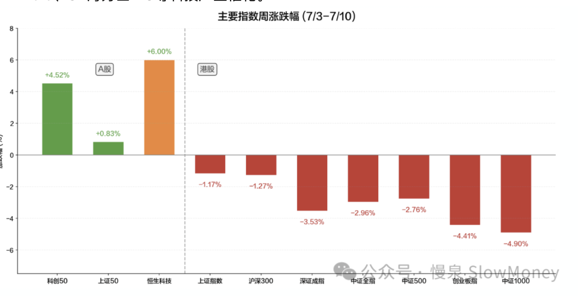
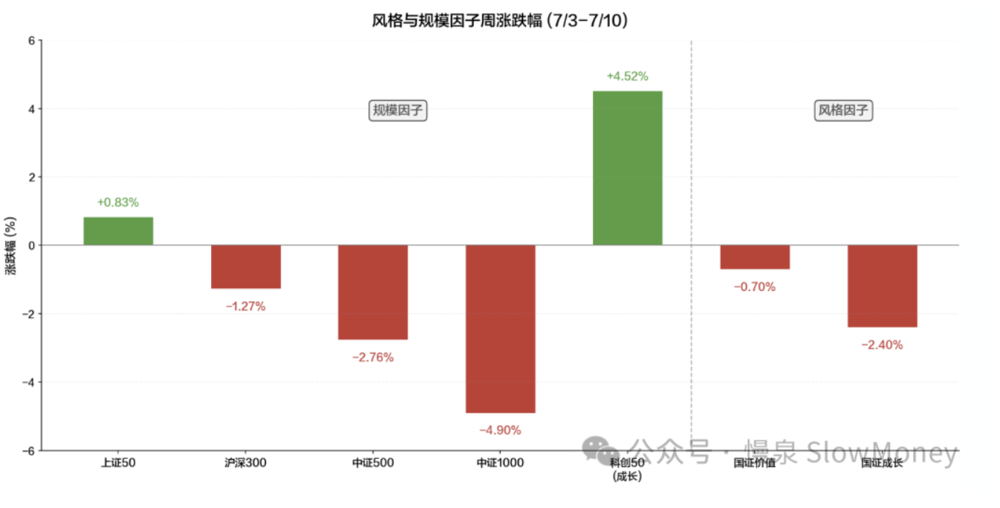

投资备忘20260711-结果还是过程？
2026-07-06 — 2026-07-11 · W28 · 周度备忘（补档）
跑步的时候脑电波市场能与宇宙产生奇妙的连接：昨天跑长距离下暴雨，又热又湿，就像这样的鬼天气跑步的意义在哪？是对抗日渐提升的体重，还是打卡本周的跑量。然后宇宙连接就开始了——可能是雨水的原因，跑步有时候是过程、有时候是结果，投资也一样：有时候希望按照自己的投资理念，有时候就只是要赢。所以投资是结果还是过程？
投资是结果还是过程？
投资是结果
这应该是不容置疑的：没有结果的过程毫无意义。历史上所有知名的投资家，没有人是投资结果不怎么样、却自称自己很牛逼的——除了牛顿。
单次博弈还是多次重复博弈
结果要分是单次博弈的结果还是多次重复博弈的结果，在评估投资的时候会产生巨大的差异——这也是为什么很多投资人在评估的时候会提出至少经历两次牛熊、至少抓住两次不同的大机会。单次博弈最简单的就是干一票、直接看结果，之后各奔东西就行；多次重复博弈就需要看持续性，而评估持续性就是评估过程。所以也就有"结果靠做出来"和"讲东西一套一套的混子"之分。
结果还是过程，唯一的变量是时间
有人可能会觉得如果空间足够大、"自由了"过程就无所谓，但这无法解决如何保障后续资金安全性和"瘾君子难题"。我看来"慢"是一切的要义：它可以拉长时间，聚焦在做正确的事情、关注结果而又不被结果控制。极端来看，生命活得久就是"慢"——因为结果都一样，过程是一切的意义。
如何赢得变化环境下的多次重复博弈——hardcore + 适应性
跟物种进化一样，每个物种都有自己的特殊生存技能、自己的 hardcore——在投资上可以是技术、量化、价值、龙头战法、心理博弈……这些能力不断打磨提升，才能生存下来；同时要吸收新变化、不断适应新环境，方法论一定不能封闭，要具备吸收新知识、适应新环境的能力——无论是国内工业周期、地产周期、消费周期还是科技 AI 周期，都需要识别和重新认知的能力。
"慢"是一切的要义：拉长时间，聚焦做正确的事情，关注结果而又不被结果控制。极端来看，生命活得久就是"慢"——因为结果都一样，过程是一切的意义。
本周市场
本周 A 股震荡下行，周四擎天一柱、周五又打回原形。本周沪深 300 下跌 1.27%，中证全指下跌 2.96%，全部 A 股涨跌幅中位数 -3.73%；科创 50 和恒生科技上涨 4.52%、6.00%，是仅有的上涨宽基指数。实际上超过 3/4 的个股本周下跌，中位数跌幅 -3.73% 远大于任何宽基指数——指数的"温和回调"掩盖了个股层面的惨烈杀跌。"窄基牛市、宽基熊市"：资金高度集中在半导体/AI 产业链，中小市值个股持续失血。7/9 成交额前十全部是半导体/AI 标的，集中度历史罕见。
前三天 A 股因美伊冲突升级 + 俄罗斯柴油禁令连续下挫，上证从 4043 跌至 3970，小盘股领跌。7/9 催化剂集中爆发（长鑫科技 IPO + GPT-5.6 上线 + SK 海力士 ADR 挂牌 + 20 家半导体涨价），半导体产业链单日史诗级暴涨，科创 50 +8.41%——但当日全 A 中位数 -0.18%、过半个股下跌。7/10 获利盘涌出，科创 50 暴跌 -5.53%，但全 A 中位数反而转正至 +1.23%，资金从过度拥挤的半导体流向其他方向。
美股本周整体偏强，科技/半导体主线延续强势。7/3–4 美国独立日假期休市，7/7 复市后市场从前一周的"地缘恐慌"中修复。尽管美伊冲突 7/9 白天进一步升级（伊朗导弹打击美军基地），但特朗普"不太可能重回战争"表态缓和了最坏预期，市场更关注 GPT-5.6、SK 海力士 IPO 等科技产业催化。
| 指数 | 本周涨跌幅 |
|---|---|
| 科创 50（7/9 单日 +8.41%、7/10 单日 -5.53%） | +4.52% |
| 恒生科技 | +6.00% |
| 上证 50 | +0.83% |
| 上证指数（周内低点 3970） | -1.17% |
| 沪深 300 | -1.27% |
| 中证 500 | -2.76% |
| 中证全指 | -2.96% |
| 深证成指 | -3.53% |
| 创业板指 | -4.41% |
| 中证 1000 | -4.90% |
| 全 A 涨跌幅中位数（超 3/4 个股下跌） | -3.73% |

结构上：大盘好过小微盘；价值成长在纠结——国证价值 -0.70%，国证成长 -2.40%。表面看价值优于成长，但实际驱动来自科创 50 单指数的极端表现（7/9 +8.41% 当日成长因子 +3.71%，7/10 暴跌 -5.53% 当日成长因子 -3.11%）；剔除科创 50 后，成长股本周整体承压。板块上，电子元件、通信和电池下跌；红利资产、消费养殖上涨。

市场分析：半导体主线加速赶顶、最强分歧、资金再平衡。主要因素包括：长鑫科技 IPO 下周开始（半导体产业链催化剂）、业绩影响、美伊冲突波动、太极实业大股东套现。
市场展望
- 仓位：仍然以中等仓位 60–70% 参与市场，更关注结构性。高位资产用于短线交易并控制在 5–10% 占比以内；红利和 HALO 资产低位布局，不追高；
- 经济：不温不火，关注外需和月底会议可能的催化，着眼月底的会议适当建立仓位；
- 情绪：当前的市场情绪和估值不支持高仓位参与，高位资产的资金流出和亏钱效应会在未来的一两周显现，并产生负向螺旋；
- 历史剧本："窄基牛市 + 宽基熊市"结构历史上出现在 2023 年二季度和 2020 年 9–10 月。以 2020 年为例：资金在中报之后从高估值科技、创新药板块中撤出，转向估值低、具备业绩支撑的金融、周期和消费龙头，市场风格完成"高低切换"——这个阶段市场指数在 3200–3400 窄幅震荡，但结构出现顺利的转换。
组合备忘
Beta 组合表现继续跑赢市场（市场指 Wind 全 A 指数），Macro 同样。组合仓位整体上行：4000 点以下按照计划增加了仓位，买入方向主要是 HALO 资产和中报改善方向。Beta 策略仓位 73% 附近，利用市场结构性的波动增加交易性持仓，寻找可持续现金流资产；Macro 策略仓位提升至 68%（其中转债 30%），整体保持谨慎。组合的表现主要受到以下因素影响：
- 风格连续第二周对组合正贡献：红利资产、HALO 资产和恒生科技本周表现较好对组合有利，同时科技持仓占比低，一定程度上也减少了大幅的波动；
- 仓位没有顶到很高，交易具备灵活性：当前主要是科技交易型参与，总仓位严格控制；红利资产在低位坚决收集筹码；
- 中报业绩的布局表现有差异：小仓位的品种下跌拉低了组合表现。
| 类别 | 仓位 |
|---|---|
| Beta 策略（4000 点以下按计划加仓，交易性持仓增加） | ≈73% |
| Macro 策略权益仓位（含转债 30%，整体保持谨慎） | 68% |
Beta 继续跑赢市场 · Macro 同样跑赢 · 周度涨幅不再公开播报
操作和思考：上周的主要操作是在 3950 附近增加了产业主题投资和 HALO 资产的布局，均是之前持有的资产，部分个股中报和市场交易反馈较好；部分中报业绩的布局，暂时没有表现。
下一步操作：市场指数震荡下行、结构巨大分化的情况下，聚焦结构、灵活交易、控制仓位是当前的应对。结构上继续关注产业主题回落的标的、红利资产和 HALO 资产；灵活交易——对于科技、中报资产和 HALO 资产一定要灵活交易，作为平衡仓位的重要手段；仓位控制不激进，用仓位冗余来创造超额收益，这个位置反弹要回到 70% 以下。方向上，主力继续红利资产、HALO 和产业主题资产，新方向包括 AI 应用资产（传媒、计算机）、月底会议的交易型资产。
上期钩子的答案：① 茅台剧本是否适用于 AI 抱团——7/9 史诗级暴涨（科创 50 单日 +8.41%）后 7/10 暴跌 -5.53%，本期原文已点名"加速赶顶、最强分歧"，quickly 阶段的剧烈波动正在上演；② 高切低的持续性——7/10 暴跌日全 A 中位数反而转正 +1.23%，资金从拥挤的半导体流出扩散，但全周仍是"窄基牛市、宽基熊市"；③ 4000 考验兑现——上证跌至 3970，组合按计划在 3950–4000 区域加仓（Beta 升至 73%，超出场时计划的上限，下一步明确"反弹要回到 70% 以下"）。新钩子：① 月底会议的交易型资产建仓；② AI 应用（传媒、计算机）新方向能否成形；③ 高位资产资金流出的"负向螺旋"未来一两周是否显现；④ 2020 年 9–10 月式"高低切换"历史剧本能否复刻。对账窗口：2026 年 7 月下旬。